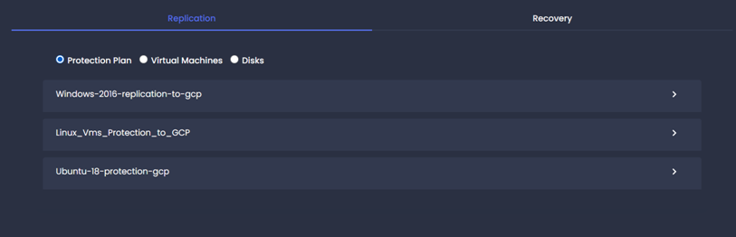
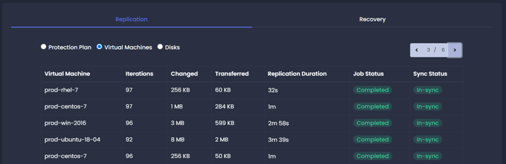
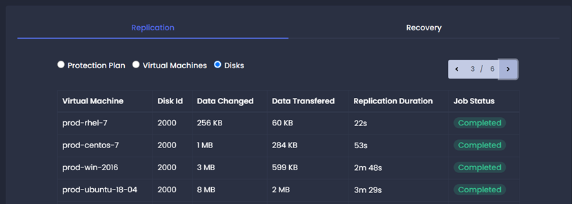

Replication Job
The Replication Jobs tab provides details about all the running, completed, and failed replication iterations. The Replication job section has the following sub-section to show replication jobs base on the grouping criteria.
Protection Plan
Navigation: Home -> Jobs -> Select Protection Plan. Protection plan replication details provide a list of protection plans. Each protection plan has its associated virtual machine replication information.
click on > icon to view protection plan level details.

| Name | Name of virtual machine associated with the protection plan. |
| Iteration | The total number of replication iterations completed. |
| Total Changed | Total data changed. |
| Total Transferred | Total data transferred to the replication server. |
| Data Reduction (%) | Overall data reduction. |
| Job Status |
Status of latest replication iteration. 1. Completed: Replication was completed successfully. 2. Started: Replication is running. 3. Partially Completed: Replication completed with errors. 4. Failed: Replication failed. |
| Sync Status |
Virtual machine sync status. 1. Init-success: The first iteration completed successfully. 2. Init-in-progress: The first iteration is running. 3. Init-failed: The first iteration failed. 4. In-sync: Iteration is completed within configured replication interval time. 5. Exceeded-interval: Iteration is completed but took more time than configured replication interval time. 6. Sync-failed: Replication iteration failed. |
Virtual Machines
Navigation: Home -> Jobs -> Select Virtual Machines.Provides a list of replication details for each protected virtual machine

| Virtual Machine | Name of the protected virtual machine. |
| Iteration | Total number of replication iterations completed. |
| Changed | Total changed data discovered. |
| Transferred | Total data transferred to the replication server. |
| Replication Duration | Time took to complete iteration. |
| Job Status | Status of latest replication iteration. |
| Sync Status | Virtual machine sync status. |
Disks
Navigation: Home -> Jobs -> Select Virtual Machines. Provide a list of replication details for each protected virtual machine disk/volume.

| Virtual Machine | Name of the protected virtual machine. |
| Disk Id | Disk id of virtual machine. |
| Data Changed | Total changed data discovered for the disk. |
| Data Transferred | Total data transferred to the replication server. |
| Replication Duration | Time took to complete iteration. |
| Job Status | Status of latest replication iteration. |